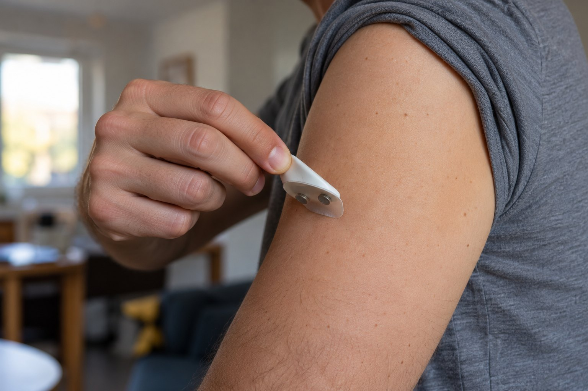

Ethics, safety & limits
The consequences of errors, privacy controls and limits of the current prototype.
Risk, privacy and study limitations
We treated ethics as design constraints. Each concern below names the decision it produced.

A caregiver trusts the device and is not woken
- Worst case
- SUDEP after an unwitnessed convulsive seizure
- Response
- Operating point tuned for sensitivity first; per-seizure-type sensitivity published so users know where ICTRA is weak; first-launch screen states it is a monitoring aid, not a guarantee
Alarm fatigue turns into muted devices
- Worst case
- The caregiver mutes it, converting every future alert into a false negative
- Response
- Multimodal fusion plus the k-of-n rule; two-stage alarm; a two-tap "false alarm" mark that feeds retraining
Not a medical device
Read details
ICTRA is a student research prototype, not approved by Health Canada, the FDA or any regulator. It must not change medication or replace prescribed monitoring. The pathway to a real product runs through prospective clinical validation and a Class II software-as-a-medical-device submission, described in Impact rather than pretended done.
Privacy: brain data stays home
Read details
Training data is public and de-identified. Live data stays on the user's machine (BioSignal Studio runs on 127.0.0.1); the alert carries a timestamp and a 60 s snapshot, never continuous raw EEG. Rolling buffers are deleted by default because EEG can reveal sleep, attention and mood.
Who the model was not trained on
Read details
SeizeIT2 is mostly adults with focal epilepsy from five European hospital units; only one centre enrolled children. Performance on infants with spasms, on generalized epilepsies, at home, and on skin and hair types that affect electrode contact is unproven. We report by seizure type and dataset so the limits are visible, including the share of seizures the behind-the-ear EEG never shows at all.
Over-reliance
A family may reduce supervision because "the device is watching". The onboarding wizard and alert wording push against this, and the dashboard shows the device's own miss rate.
Silence must never mean safety
A dead battery is a silent failure. The app warns at 20% and the caregiver app shows "last heartbeat received", so no signal is never mistaken for no seizure. Electrical safety: battery power only, no mains peripherals, written into the README and the wizard.
Autonomy and access
Continuous monitoring can erode autonomy, especially for teenagers: the patient controls start/stop and sees every alert. A local-only mode works with any laptop and a cheap speaker, so the build does not require a modern phone and Wi-Fi.
Disclosure: an AI coding assistant was used for code review, debugging and documentation drafting. All datasets, model choices, experiments, hardware and analysis are the team's; AI-assisted text was checked against primary sources.
Development goals and clinical pathway
How fast someone reaches the person seizing. Who can afford to be watched. Whether the neurologist finally sees the real seizure count. The expensive part of monitoring is the specialist reading the signal; ICTRA moves that reading into a model trained on more than 11,000 hours of expert-annotated data, so the cost of watching one more person approaches the cost of three electrodes.
Target ≤ 10 s median alert latency
Nocturnal supervision is protective; an alert that wakes a caregiver within seconds addresses the most dangerous moment in epilepsy.
Open build, consumer-grade cost
Hardware files, firmware, training code and weights released under an open licence; local-only mode runs on any laptop. 80% of patients live where video-EEG is out of reach.
A seizure diary a neurologist can use
Timestamped, signal-backed events replace diaries that miss over half of seizures, exportable for a 15-minute appointment.